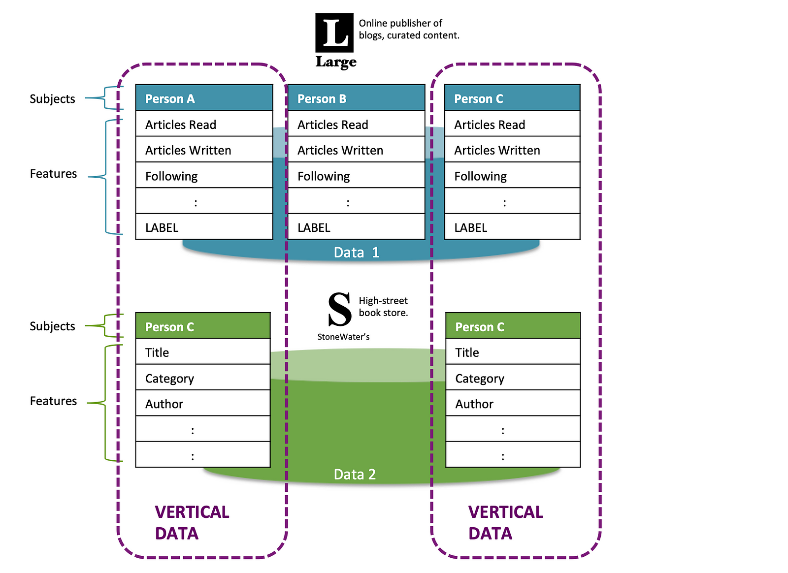

Let's understand them in detail in this section:
Horizontal Federated Learning (HFL), or sample-partitioned federated learning, is a type of federated learning in which participants share the same feature space but have different data samples.
Consider two hospitals located in different cities. Both institutions gather similar types of patient data, such as age, blood pressure, and diagnosis; however, each hospital maintains records for distinct groups of patients. Given that the features are consistent but the individuals vary, Federated Learning (HFL) enables them to collaboratively train a model without the need to share their raw data.
Key Characteristics of HFL:
HFL typically used in finance, healthcare and mobile applications. Google's keyboard suggestions on Android devices is a classic example.
Vertical Federated Learning (VFL), also called feature-partitioned federated learning, is a collaborative machine learning approach where multiple parties possess different features related to the same set of users.
In the following example, we have two fictitious companies: a) Large, an online publisher for blogs, and b) StoneWater, a high street book retailer. Some of StoneWater's customers also work as curators at the blogging site.

Figure 10. 6: VFL Examples
Both companies collect different features from their customers. StoneWater captures information such as book 'Title,' 'Category,' and 'Author' from each purchase, while Large gathers data on customers' reading behavior. Although both companies have access to the same customers, StoneWater possesses information related to book purchases, while Large holds data on reading habits. The VFL (Vertical Federated Learning) model allows them to jointly train a machine learning model without ever sharing their raw data or revealing any sensitive information.
Key Characteristics of VFL:
VFLs are typically used in healthcare and marketing, where various organisations can collaborate without compromising the user's privacy.
Cross-silo federated learning is a collaborative machine learning method in which a select group of trusted organizations—such as hospitals, banks, or universities—train a shared model without sharing their raw data.
In cross-silo federated learning, a central server distributes an initial model to each participating organization, or "silo." Each silo then trains the model using its own local data. Instead of sharing the data itself, each organization sends back only model updates, such as gradients or parameters, to the server. The server aggregates these updates to enhance the global model. This process continues in cycles until the model converges.
Key Characteristics of Cross-silo Federated Learning
Cross-device federated learning is a form of federated learning where millions of personal devices—such as smartphones, tablets, or IoT gadgets—collaborate to train a shared machine learning model without transmitting their raw data to a central server.
In cross-device federated learning, each device begins by downloading the current global model. It then trains this model locally using its own data, which may include information such as keyboard usage, app behavior, or sensor readings. Rather than sending the data itself back to a central server, the device transmits only the model updates. The central server then aggregates updates from numerous devices to enhance the global model.
Key Characteristics of Cross-device Federated Learning:
Federated Transfer Learning (FTL) is a specialized type of federated learning, tailored for circumstances where participants possess different feature spaces and varying user sets, yet still aim to collaborate on training a machine learning model without sharing their raw data.
In Federated Transfer Learning (FTL), one party may possess a well-trained model based on a large dataset, while another party may have limited data but wishes to leverage that existing knowledge. Transfer learning allows the pre-trained model to be adapted for the new task or domain. This adaptation occurs in a federated setting, which means that each party keeps its data local and only shares encrypted model updates. A central server, or a decentralized protocol, then aggregates these updates to enhance the global model.
Key Characteristics of FTL:
Table 10. 2: A Comparison Between FL Types
|
Feature |
Horizontal Federated Learning (HFL) |
Vertical Federated Learning (VFL) |
Federated Transfer Learning (FTL) |
Cross-Silo Federated Learning (CSFL) |
Cross-Device Federated Learning (CDFL) |
|
Data Structure |
Same feature space, different samples |
Same samples, different feature space |
Different samples, different feature space |
Same or different samples, large datasets |
Same feature space, different samples |
|
Participants |
Multiple organizations or devices |
Multiple organizations with complementary features |
Organizations with non-overlapping datasets |
Limited number of organizations (silos) |
Numerous edge devices (e.g., smartphones) |
|
Privacy |
Data remains local |
Data remains local |
Data remains local |
Data remains local |
Data remains local |
|
Collaboration |
Collaborative model training |
Collaborative model training |
Knowledge transfer across domains |
Collaborative model training |
Collaborative model training |
|
Aggregation |
Central server aggregates model updates |
Central server aggregates encrypted updates |
Central server aggregates intermediate representations |
Central server aggregates model updates |
Central server aggregates model updates |
|
Main Use Cases |
Healthcare, finance, mobile apps |
Finance and healthcare |
Healthcare, finance, retail |
Healthcare, finance, research |
Mobile apps, IoT networks, healthcare |
|
Advantages |
Robust models, privacy, scalability |
Comprehensive models, privacy, regulatory compliance |
Generalizable models, privacy, cross-domain learning |
Privacy, improved model performance, compliance |
Enhanced privacy, scalability, low latency |
|
Challenges |
Coordination, communication overhead |
ID alignment, communication overhead, data heterogeneity |
Complexity, communication overhead, data heterogeneity |
Coordination, network overhead, data heterogeneity |
Device heterogeneity, communication overhead, security |
1. https://openmined.org/blog/federated-learning-types/